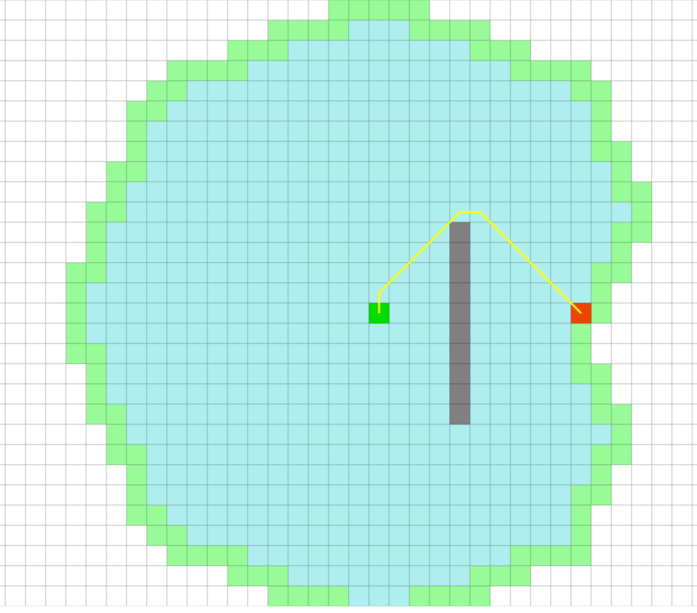
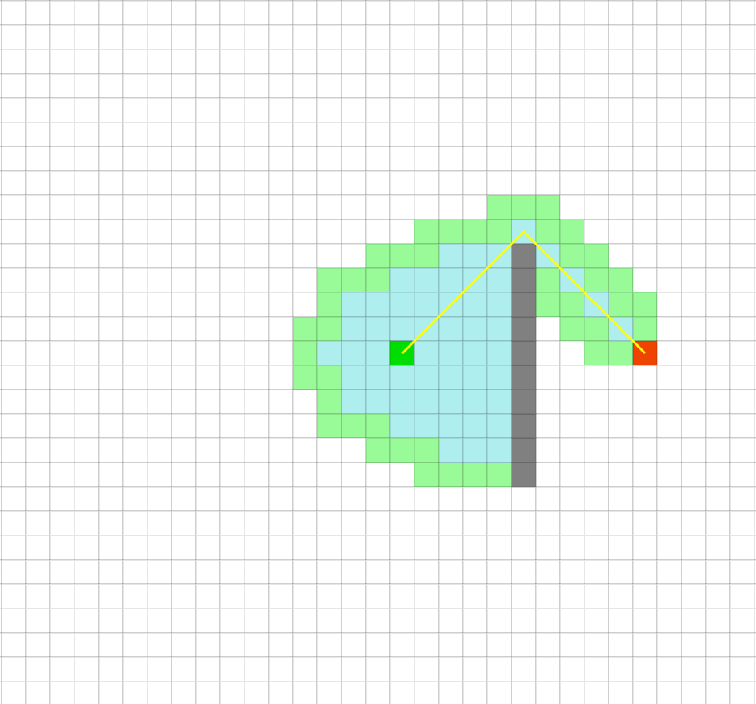

- Setup and Getting the Skeleton Files
- Introduction
- The A* Algorithm
- Implementation
- Testing Out Your Solver
- FAQ
Setup and Getting the Skeleton Files
As usual, run git pull skeleton master to get the skeleton files.
For this project, you’ll need some kind of ExtrinsicMinPQ. We recommend using your ArrayHeapMinPQ from project 2B, but we provide an alternative DoubleMapPQ that you can use instead.
To do this, after getting the skeleton files and importing the project, copy over your ArrayHeapMinPQ into the bearmaps/proj2ab folder. You’ll see that IntelliJ complains that the package declaration is wrong. Go to the top of ArrayHeapMinPQ and change the package declaration to package bearmaps.proj2ab. If you don’t feel confident in your ArrayHeapMinPQ, then you can ignore this entirely, and just use the provided DoubleMapPQ instead.
Introduction
In this assignment, we’ll be building an artificial intelligence that can solve arbitrary state space traversal problems. Specifically, given a graph of possible states, your AI will find the optimal route from the start state to a goal state.
This AI will be able to solve a wide variety of problems, including finding driving directions, solving a 15 puzzle, and finding word ladders.
Your AI will use the technique from lecture called A*.
AStarGraph
Problems to be solved by your AI will be provided in the form of a graph. More specifically, they will be given as a class that implements AStarGraph. This simple interface is given below.
package bearmaps.proj2c;
public interface AStarGraph<Vertex> {
/** Provides a list of all edges that go out from v to its neighbors. */
List<WeightedEdge<Vertex>> neighbors(Vertex v);
/** Provides an estimate of the number of moves to reach the goal from
* the start position. For results to be correct, this estimate must
* be less than or equal to the correct distance. */
double estimatedDistanceToGoal(Vertex s, Vertex goal);
}
Perhaps surprisingly, this simple interface captures a huge swath of real world problems, including all the problems described in the introduction.
In turn, the WeightedEdge<Vertex> class represents a directed edge from an object of type Vertex to another object of type Vertex. The WeightedEdge class has the API below:
package bearmaps.proj2c;
public class WeightedEdge<Vertex> {
/** The source of this edge. */
public Vertex from()
/** The destination of this edge. */
public Vertex to()
/** The weight of this edge. */
public double weight()
}
As seen above, every AStarGraph object must be able to return a list of all edges that point out from a given vertex (neighbors), and it must have a method to return the estimated distance between any two vertices. This estimate was called a heuristic in lecture.
As an example, if we were solving the graph from the example given in lecture (link), then neighbors(4) would return a list of three edges. These three edges would have:
from():4,to():2,weight()1from():4,to():5,weight()4from():4,to():6,weight()5
For this same example, estimatedDistanceToGoal(2, 6) would yield 15.
The A* Algorithm
Memory-Optimizing A*
This spec will not describe the A* algorithm in sufficient detail for you to be able to complete this assignment. Make sure you understand how A* works as described in lecture before reading further. For your convenience, see this link.
In theory, the version of A* that we described in lecture will work. Recall that this algorithm requires that we start with a priority queue that contains every possible vertex. This is often impossible in practice due to the memory limits of real computers. For example, suppose our graph corresponds to every state in a 15 puzzle. There are trillions of possible configurations for a 15 possible, so we cannot explicitly build such a graph.
To save memory, we will implement a different version of A* with one fundamental difference: Instead of starting with all vertices in the PQ, we’ll start with only the start vertex in the PQ.
This necessitates that we also change our relaxation operation. In the version from lecture, a successful relaxation operation updated the priority of the target vertex, but never added anything new. Now that the PQ starts off mostly empty, a successful relaxation must add the target vertex if it is not already in the PQ.
We will also make a third but less important change: If the algorithm takes longer than some timeout value to find the goal vertex, it will stop running and report that a solution was unable to be found. This is done because some A* problems are so hard that they can take e.g. billions of years and terabytes amounts of memory (due to a large PQ) to solve.
To summarize, our three differences from the lecture version are:
- The algorithm starts with only the start vertex in the PQ.
- When relaxing an edge, if the relaxation is successful and the target vertex is not in the PQ, add it.
- If the algorithm takes longer than some timeout value, it stops running.
Algorithm Pseudocode
In pseudocode, this memory optimized version of A* is given below:
- Create a PQ where each vertex
vwill have prioritypequal to the sum ofv’s distance from the source plus the heuristic estimate fromvto the goal. - Insert the source vertex into the PQ.
- Repeat until the PQ is empty,
PQ.getSmallest()is the goal, or timeout is exceeded:p = PQ.removeSmallest()- relax all edges outgoing from
p
And where the relax method pseudocode is given as below:
relax(e):p = e.from(),q = e.to(),w = e.weight()- if
distTo[p] + w < distTo[q]:distTo[q] = distTo[p] + w- if
qis in the PQ:changePriority(q, distTo[q] + h(q, goal)) - if
qis not in PQ:add(q, distTo[q] + h(q, goal))
A demo of this algorithm running can be found at this link.
A demo showing A* from lecture running side-by-side with memory optimized A* can be found at this link. This example is also run on a more interesting graph than the earlier example.
Some interesting consequences of these changes:
- In the lecture version, once a vertex was removed from the PQ, it was gone forever. This meant that each vertex was visited at most one time. In this new version of A*, the algorithm can theoretically revisit the same vertex many times.
- Beyond the scope of our course: As a side effect of the consequence above, admissibility is a sufficient condition for correctness for the memory optimized version of A*. For the version in lecture, we needed a stronger criterion for our heuristic called consistency. Take CS 188 if you’d like to learn more. You are not expected to know about admissibility and consistency on the exams (though we might still have problems that cover them, we’ll just make sure to re-introduce the terms from scratch if we do so).
Note: One additional optimization we can make is to avoid storing the best known distance and edge to every vertex. In this case, rather than “relaxing” edges, we’d blindly add all discovered vertices to our PQ. This is the equivalent of treating every edge relaxation as successful. This requires the addition of an “already visited set” to keep memory from getting out of hand. This implementation of A* will be described in CS 188.
For this CS 61B assignment, however, you should maintain some sort of instance variables that track the best known distance (i.e. distTo) to every vertex that you’ve seen (i.e. that has been on the result of a call to to() on a WeightedEdge).
Implementation
Create an AStarSolver class with the following API:
public class AStarSolver<Vertex> implements ShortestPathsSolver<Vertex> {
public AStarSolver(AStarGraph<Vertex> input, Vertex start, Vertex end, double timeout)
public SolverOutcome outcome()
public List<Vertex> solution()
public double solutionWeight()
public int numStatesExplored()
public double explorationTime()
}
where the constructor and methods work as follows:
AStarSolver: Constructor which finds the solution, computing everything necessary for all other methods to return their results in constant time. Note that thetimeoutpassed in is in seconds.-
outcome: Returns one ofSolverOutcome.SOLVED,SolverOutcome.TIMEOUT, orSolverOutcome.UNSOLVABLE. Should beSOLVEDif theAStarSolverwas able to complete all work in the time given.UNSOLVABLEif the priority queue became empty.TIMEOUTif the solver ran out of time. You should check to see if you have run out of time every time you dequeue. solution: A list of vertices corresponding to a solution. Should be empty if result wasTIMEOUTorUNSOLVABLE.solutionWeight: The total weight of the given solution, taking into account edge weights. Should be 0 if result wasTIMEOUTorUNSOLVABLE.numStatesExplored: The total number of priority queue dequeue operations.explorationTime: The total time spent in seconds by the constructor.
Note: Since AStarGraph<Vertex> uses a generic type for vertices, the input graph’s vertices may be a reference type. Thus, make sure to use the equals method whenever you want to compare two vertices for equality.
Note that the result class returns an object of type SolverOutcome. If you open this file, you’ll see that this is a special entity known as an enum which is very similar to a class. For more details, see this link. Basically, an enum is just a type that stores exactly one of several possible constants, and has no methods.
If you did not complete Project 2B, or you just aren’t sure if your ArrayHeapMinPQ works correctly, you may use our provided DoubleMapPQ, which also implements ExtrinsicMinPQ. Note that DoubleMapPQ is slower and more memory hungry than ArrayHeapMinPQ, but it still has log time operations, so will still be good enough for this project.
An example solver is given as LazySolver.java. This solver simply tries the first edge it sees and if that edge doesn’t lead to the solution, it (incorrectly) claims that the puzzle is unsolvable. You might find LazySolver helpful as a reference.
DO NOT COPY AND PASTE LazySolver INTO AStarSolver AND TRY TO ADAPT IT. This is likely only going to make you miserable later when you try to debug something that you didn’t write yourself and don’t understand. If you do this, and ask us questions at office hours, we will be sad. Some of you tried to do LinkedListDeque by copying SLList and trying to adapt it, and the results were not pretty.
Testing Out Your Solver
Unlike Project 2A and 2B, there is an autograder for this project. However, it’s a lot easier to debug on your own computer. We’ve provided five different implementations of the AStarGraph interface that you can try out. They are described below. Some implementations contain optional challenges for you to experiment with; they are ungraded.
bearmaps.proj2c.lectureexample
The example from lecture is given in DemoLectureExampleSolution. This class uses the WeightedDirectedGraph, which represents, as the name suggests, a weighted directed graph.
If you edit the DemoLectureExmapleSolution to use your AStarSolver and run the DemoLectureExampleSolution file, you should get the following output:
Total states explored in 0.001s: 3
Search was successful.
Solution was of length 4, and had total weight 10.0:
0 => 1 => 4 => 6
The DemoAlternateExampleSolution file provides the graph from the side-by-side demo of A* and the memory optimized A* (link for your convenience).
bearmaps.proj2c.integerhoppuzzle
In an “Integer Hop Puzzle” (a thing I made up), the goal is to get from a starting integer to a goal integer at a minimum cost.
Possible transitions are as follows:
- Add or subtract 1. This costs 1 (i.e. has weight 1).
- Multiple or divide by 2. This costs 5.
- Square the number. This costs 10.
So for example, if we start at 1 and want to get to 5, the lowest cost path is 1 → 2 → 3 → 4 → 5, with a total cost of 4.
As another example, if we start at 1 and want to get to 20, the lowest cost path is 1 → 2 → 3 → 4 → 5 → 20, with a total cost of 14.
As a last example, if we start at 17 and want to get to 111, the lowest cost path is 17 → 16 → 15 → 225 → 112 → 111, with total cost 18.
If you edit the DemoIntegerHopPuzzleSolution to use your AStarSolver and run the DemoIntegerHopPuzzleSolution file, you should get something similar to:
Total states explored in 0.018s: 338
Search was successful.
Solution was of length 6, and had total weight 18.0:
17 => 16 => 15 => 225 => 112 => 111
Note that the exact number of states explored may vary if your priority queue breaks ties differently than ours.
Explore: Try some different starting and goal points. Sometimes some pretty surprising results can occur, e.g. s = 258, goal = 4. You might also consider changing the weights of various moves or even adding new ones (by editing IntegerHopGraph).
Difficult challenge: For this graph, the heuristic simply returns 0. As a difficult challenge, try to write a heuristic that significantly reduces the number of states explored. Note: Your heuristic must always underestimate the correct distance to the goal in order to guarantee correctness for A*. That is, it must be “admissible”. For example, the heuristic that simply computes goal - s would be admissible if the only possible moves were add and subtract. However, this heuristic overestimates for many cases, e.g. s = 17, goal = 111.
bearmaps.proj2c.wordladderpuzzle
In a Word Ladder puzzle, we try to convert one word in English to another by either changing, adding, or removing letters such that every transition results in a valid English word. Suppose we start with the word “horse” and we want to turn it into “nurse”. To do this, we could perform the following transitions: horse → hose → hole → cole → core → cure → pure → purse → nurse, for a total word ladder length of 9 words.
For this graph, each edge has weight 1. The provided heuristic computes the “Levenshtein edit distance”, which is the number of single character edits (replacements, insertions, or deletions) needed to get from one string to another.
If you run this program you’ll see:
“Exception in thread “main” java.lang.IllegalArgumentException: Could not open words10000.txt”
To correct this, go to the “Edit Configurations” option under the Run menu of IntelliJ. Change the working directory to point to the folder that ends with bearmaps/proj2c/input on your computer.
Running the demo for this graph with your AStarSolver should yield an answer like:
Total states explored in 0.874s: 198
Search was successful.
Solution was of length 9, and had total weight 8.0:
horse->hose->home->come->core->cure->pure->purse->nurse
As before, the exact number of states explored may differ if your priority queue breaks ties differently.
Explore: Try out different starting and ending words.
Extra challenge: The neighbors method for the WordGraph class runs in linear time in the size of the entire list of words. Try to improve it to be faster.
bearmaps.proj2c.slidingpuzzle
The 15 puzzle is a puzzle invented and popularized by Noyes Palmer Chapman in the 1870s (though bizarrely, the famous puzzle creator Sam Loyd falsely claimed to have invented it, along with other scams). The original version is played on a 4-by-4 grid with 15 square tiles labeled 1 through 15 and a blank square, though there are also 2-by-2 and 4-by-4 variants. The goal of this puzzle is to rearrange the tiles so that they are in order, using as few moves as possible. The player is permitted to slide tiles horizontally or vertically into the blank square.
You can play this game yourself at this link. Personally, I hate playing this game, so it’s very satisfying to build an AI to solve it for me. If you’ve created AStarSolver, then you’ve already built an AI that can do this.
As an example of a solution, the following shows a sequence of legal moves from an initial board (left) to the goal board (right) on the 3-by-3 version.
1 3 1 3 1 2 3 1 2 3 1 2 3
4 2 5 => 4 2 5 => 4 5 => 4 5 => 4 5 6
7 8 6 7 8 6 7 8 6 7 8 6 7 8
initial 1 left 2 up 5 left goal
This is also just a graph, where each possible state of the board has up to 4 neighbors corresponding to sliding the left, top, right, or bottom neighbor of the blank into the blank. As with word ladders, every edge has weight equal to 1. In the provided code, the heuristic just returns 0. That is, your AI is just running Dijkstra’s. If you’d like to do better, see the Challenge or High Difficulty Challenge below.
Similar to wordLadderPuzzle, if you run this program you’ll see an IllegalArgumentException.
To correct this, go to the “Edit Configurations” option under the Run menu of IntelliJ. Change the working directory to point to the folder that ends with bearmaps/proj2c/input on your computer.
Now, try running DemoSlidingPuzzleSolution and DemoRunSeveralPuzzles, and your code should be able to successfully solve the BasicPuzzles.
Explore: Open BasicPuzzle1.txt through BasicPuzzle4.txt and compare the length of the solution that your code provides vs. ours. This length should be exactly correct.
For example BasicPuzzle4.txt says:
6 0 5
8 7 4
3 2 1
solution length: 30
difficulty: Easy++
dijkstra states explored: 181404
manhattan states explored: 4831
Thus, if you look at the results of running BasicPuzzle4 using your implementation of AStar, it should yield a solution of length 30, and explore roughly 180,000 states. The exact number of states may vary depending on how your PQ breaks ties.
You’ll also see a line about “manhattan states explored”. This refers to the number of states explored if we use a heuristic called the “manhattan distance”. You’ll see that the number of states explored is dramatically less!
This is essentially what we saw in the demo from https://qiao.github.io/PathFinding.js/visual/ during lecture comparing traversal of a space with walls using Dijkstra’s vs. A*.
Dijkstra’s just blindly explores every direction.

… whereas A* tries to be smart about which direction to go.

In the case of the provided puzzle files, “manhattan” refers to using the manhattan distance heuristic. If you’re curious about what this means, see the challenge below. It’s not particularly tough, but is entirely optional.
Challenge: As noted above, right now the heuristic for the BoardGraph class simply returns 0; your A* implementation is just running Dijkstra’s algorithm. The challenge is to implement a better heuristic for the BoardGraph class. Two natural heuristics are the Hamming distance and the Manhattan distance. The Hamming distance is simply the number of spaces which do not match in the two boards. Don’t count the blank square. The Manhattan distance is the sum of the total x distance + the total y distance between all pairs of numbers, again ignoring the blank square.
For example, the Manhattan distance between the two boards below is 5. This is because Manhatan(1) = 2, Manhattan(2) = 0, Manhattan(3) = 0, Manhattan(4) = 1, Manhattan(5) = 1, Manhattan(6) = 0, Manhattan(7) = 1, and Manhattan(8) = 4.
8 2 3 1 2 3
5 4 6 4 5 6
1 7 7 8
Try running a puzzle again with the Hamming or Manhattan distance. You should see a dramatic improvement. If you implement Manhattan distance, you should be able to solve HardPuzzle1.txt through HardPuzzle3.txt, though if you’re using the DoubleMapPQ, it might not complete HardPuzzle3 because of the slower PQ. If you pick a big enough timeout, you might even be able to solve ElitePuzzle1.txt.
High Difficulty Challenge: Try to implement a better heuristic or a better search algorithm (e.g. IDA*). If you manage to solve ElitePuzzle3.txt, email Josh or drop by office hours and let him know how you did it.
bearmaps.proj2c.streetmap
A street map of the area near UC Berkeley has been implemented in the bearmaps.proj2c.streetmap package. This information was collected from the Open Street Map Project project. Each vertex corresponds to a specific latitude and longitude (often but not always intersections), and each edge corresponds to a segment of street that connects to vertices. Each edge has weight proportional to the length of the corresponding segment of street.
Try running DemoStreetDirections and it will provide directions from 2793619975 to 2793619967. You’ll notice that they aren’t very interesting! What good is it to know that you need to go from node 2793619975 to node 2793619973 to node 2793619972 to node 2793619970 to node 57872683 to node 2793619967?
In project 2D, you’ll bring these paths to life, by overlaying them as driving/walking/biking directions on a web-browser based mapping application.
Challenge: Going Beyond Our Graph Examples
You might find it interesting to try to implement your own AStarGraph problem. Examples include maze traversals, solving a Rubik’s cube, and more. Share anything interesting you build with Josh at office hours or with your mentor TA.
FAQ
The AG is reporting a bug involving access or some kind of null pointer exception. What’s going on?
It’s important that your AStarSolver methods work no matter the
order in which they are called, and no matter how many times they are called. Only the constructor should make any changes to the instance variables of the AStarSolver class.
It seems wasteful to store the edge and distance to every vertex I’ve ever seen when I really just care about the path to the goal. Should I try to optimize around this?
You can try. However, you’ll still need to at least mark whether a vertex has already been visited. For example, you can create a HashSet<Vertex> to record all marked vertices. It is possible to do this, but be warned: this is beyond the scope for CS 61B, so it’s going to feel very hand-wavy.
The key issue is that you shouldn’t consider a state to be “used” until it is dequeued.
In other words, if you DO attempt to do this, you should only “mark” a vertex when it is dequeued from the PQ, not when it is enqueued! The reason for this is beyond the scope of CS 61B (see CS 188 for more!), but the rough intuition behind this is as follows: If you’re at the end of a sequence of edges that ends at vertex X and you see that vertex G is one of X’s neighbors, it’s not safe to assume that this is the best path, and therefore it’s not safe to enqueue X → G and then subsequently disallow all other paths that end in G.
As a crude analogy, imagine trying to compute driving directions to the Eiffel Tower by looking at a bunch of pictures taken from various locations: Just because you can see the Eiffel Tower from a picture of location X doesn’t mean that location X is along the best route to your destination, so you can’t just give up the first time you see the Eiffel Tower in a picture.
Note: If you take CS 188, you’ll learn that this version of A* is called A* Graph
Search, whereas the version given in the spec is called A* Tree Search. The version presented in lecture (where all vertices start off enqueued) is also A* Graph Search.